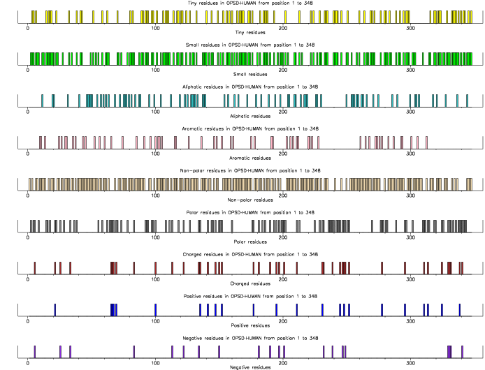

|
|
pepinfo |
It can plot and display the following properties:
The data are also written out to a data file.
% pepinfo Plots simple amino acid properties in parallel Input protein sequence: tsw:opsd_human Graph type [x11]: cps Output file [opsd_human.pepinfo]: Created pepinfo.ps |
Go to the input files for this example
Go to the output files for this example
Standard (Mandatory) qualifiers:
[-sequence] sequence Protein sequence filename and optional
format, or reference (input USA)
-graph xygraph [$EMBOSS_GRAPHICS value, or x11] Graph type
(ps, hpgl, hp7470, hp7580, meta, cps, x11,
tekt, tek, none, data, xterm, png, gif)
[-outfile] outfile [*.pepinfo] Output file name
Additional (Optional) qualifiers:
-aaproperties datafile [Eaa_properties.dat] Amino acid chemical
classes data file
-aahydropathy datafile [Eaa_hydropathy.dat] Amino acid hydropathy
values data file
-hwindow integer [9] Window size for hydropathy averaging
(Integer 1 or more)
Advanced (Unprompted) qualifiers:
-[no]generalplot boolean [Y] Plot histogram of general properties
-[no]hydropathyplot boolean [Y] Plot graphs of hydropathy
Associated qualifiers:
"-sequence" associated qualifiers
-sbegin1 integer Start of the sequence to be used
-send1 integer End of the sequence to be used
-sreverse1 boolean Reverse (if DNA)
-sask1 boolean Ask for begin/end/reverse
-snucleotide1 boolean Sequence is nucleotide
-sprotein1 boolean Sequence is protein
-slower1 boolean Make lower case
-supper1 boolean Make upper case
-sformat1 string Input sequence format
-sdbname1 string Database name
-sid1 string Entryname
-ufo1 string UFO features
-fformat1 string Features format
-fopenfile1 string Features file name
"-graph" associated qualifiers
-gprompt boolean Graph prompting
-gdesc string Graph description
-gtitle string Graph title
-gsubtitle string Graph subtitle
-gxtitle string Graph x axis title
-gytitle string Graph y axis title
-goutfile string Output file for non interactive displays
-gdirectory string Output directory
"-outfile" associated qualifiers
-odirectory2 string Output directory
General qualifiers:
-auto boolean Turn off prompts
-stdout boolean Write standard output
-filter boolean Read standard input, write standard output
-options boolean Prompt for standard and additional values
-debug boolean Write debug output to program.dbg
-verbose boolean Report some/full command line options
-help boolean Report command line options. More
information on associated and general
qualifiers can be found with -help -verbose
-warning boolean Report warnings
-error boolean Report errors
-fatal boolean Report fatal errors
-die boolean Report dying program messages
|
| Standard (Mandatory) qualifiers | Allowed values | Default | |
|---|---|---|---|
| [-sequence] (Parameter 1) |
Protein sequence filename and optional format, or reference (input USA) | Readable sequence | Required |
| -graph | Graph type | EMBOSS has a list of known devices, including ps, hpgl, hp7470, hp7580, meta, cps, x11, tekt, tek, none, data, xterm, png, gif | EMBOSS_GRAPHICS value, or x11 |
| [-outfile] (Parameter 2) |
Output file name | Output file | <*>.pepinfo |
| Additional (Optional) qualifiers | Allowed values | Default | |
| -aaproperties | Amino acid chemical classes data file | Data file | Eaa_properties.dat |
| -aahydropathy | Amino acid hydropathy values data file | Data file | Eaa_hydropathy.dat |
| -hwindow | Window size for hydropathy averaging | Integer 1 or more | 9 |
| Advanced (Unprompted) qualifiers | Allowed values | Default | |
| -[no]generalplot | Plot histogram of general properties | Boolean value Yes/No | Yes |
| -[no]hydropathyplot | Plot graphs of hydropathy | Boolean value Yes/No | Yes |
ID OPSD_HUMAN Reviewed; 348 AA.
AC P08100; Q16414; Q2M249;
DT 01-AUG-1988, integrated into UniProtKB/Swiss-Prot.
DT 01-AUG-1988, sequence version 1.
DT 20-MAR-2007, entry version 91.
DE Rhodopsin (Opsin-2).
GN Name=RHO; Synonyms=OPN2;
OS Homo sapiens (Human).
OC Eukaryota; Metazoa; Chordata; Craniata; Vertebrata; Euteleostomi;
OC Mammalia; Eutheria; Euarchontoglires; Primates; Haplorrhini;
OC Catarrhini; Hominidae; Homo.
OX NCBI_TaxID=9606;
RN [1]
RP NUCLEOTIDE SEQUENCE [GENOMIC DNA].
RX MEDLINE=84272729; PubMed=6589631;
RA Nathans J., Hogness D.S.;
RT "Isolation and nucleotide sequence of the gene encoding human
RT rhodopsin.";
RL Proc. Natl. Acad. Sci. U.S.A. 81:4851-4855(1984).
RN [2]
RP NUCLEOTIDE SEQUENCE [GENOMIC DNA].
RA Suwa M., Sato T., Okouchi I., Arita M., Futami K., Matsumoto S.,
RA Tsutsumi S., Aburatani H., Asai K., Akiyama Y.;
RT "Genome-wide discovery and analysis of human seven transmembrane helix
RT receptor genes.";
RL Submitted (JUL-2001) to the EMBL/GenBank/DDBJ databases.
RN [3]
RP NUCLEOTIDE SEQUENCE [LARGE SCALE MRNA].
RC TISSUE=Retina;
RG The German cDNA consortium;
RL Submitted (JUN-2003) to the EMBL/GenBank/DDBJ databases.
RN [4]
RP NUCLEOTIDE SEQUENCE [LARGE SCALE MRNA].
RX PubMed=15489334; DOI=10.1101/gr.2596504;
RG The MGC Project Team;
RT "The status, quality, and expansion of the NIH full-length cDNA
RT project: the Mammalian Gene Collection (MGC).";
RL Genome Res. 14:2121-2127(2004).
RN [5]
RP NUCLEOTIDE SEQUENCE [GENOMIC DNA] OF 1-120.
RX PubMed=8566799; DOI=10.1016/0378-1119(95)00688-5;
RA Bennett J., Beller B., Sun D., Kariko K.;
RT "Sequence analysis of the 5.34-kb 5' flanking region of the human
RT rhodopsin-encoding gene.";
RL Gene 167:317-320(1995).
RN [6]
RP REVIEW ON RP4 VARIANTS.
RX MEDLINE=94004905; PubMed=8401533;
RA Al-Maghtheh M., Gregory C., Inglehearn C., Hardcastle A.,
RA Bhattacharya S.;
[Part of this file has been deleted for brevity]
FT /FTId=VAR_004816.
FT VARIANT 209 209 V -> M (effect not known).
FT /FTId=VAR_004817.
FT VARIANT 211 211 H -> P (in RP4).
FT /FTId=VAR_004818.
FT VARIANT 211 211 H -> R (in RP4).
FT /FTId=VAR_004819.
FT VARIANT 216 216 M -> K (in RP4).
FT /FTId=VAR_004820.
FT VARIANT 220 220 F -> C (in RP4).
FT /FTId=VAR_004821.
FT VARIANT 222 222 C -> R (in RP4).
FT /FTId=VAR_004822.
FT VARIANT 255 255 Missing (in RP4).
FT /FTId=VAR_004823.
FT VARIANT 264 264 Missing (in RP4).
FT /FTId=VAR_004824.
FT VARIANT 267 267 P -> L (in RP4).
FT /FTId=VAR_004825.
FT VARIANT 267 267 P -> R (in RP4).
FT /FTId=VAR_004826.
FT VARIANT 292 292 A -> E (in CSNBAD1).
FT /FTId=VAR_004827.
FT VARIANT 296 296 K -> E (in RP4).
FT /FTId=VAR_004828.
FT VARIANT 297 297 S -> R (in RP4).
FT /FTId=VAR_004829.
FT VARIANT 342 342 T -> M (in RP4).
FT /FTId=VAR_004830.
FT VARIANT 345 345 V -> L (in RP4).
FT /FTId=VAR_004831.
FT VARIANT 345 345 V -> M (in RP4).
FT /FTId=VAR_004832.
FT VARIANT 347 347 P -> A (in RP4).
FT /FTId=VAR_004833.
FT VARIANT 347 347 P -> L (in RP4; common variant).
FT /FTId=VAR_004834.
FT VARIANT 347 347 P -> Q (in RP4).
FT /FTId=VAR_004835.
FT VARIANT 347 347 P -> R (in RP4).
FT /FTId=VAR_004836.
FT VARIANT 347 347 P -> S (in RP4).
FT /FTId=VAR_004837.
SQ SEQUENCE 348 AA; 38893 MW; 6F4F6FCBA34265B2 CRC64;
MNGTEGPNFY VPFSNATGVV RSPFEYPQYY LAEPWQFSML AAYMFLLIVL GFPINFLTLY
VTVQHKKLRT PLNYILLNLA VADLFMVLGG FTSTLYTSLH GYFVFGPTGC NLEGFFATLG
GEIALWSLVV LAIERYVVVC KPMSNFRFGE NHAIMGVAFT WVMALACAAP PLAGWSRYIP
EGLQCSCGID YYTLKPEVNN ESFVIYMFVV HFTIPMIIIF FCYGQLVFTV KEAAAQQQES
ATTQKAEKEV TRMVIIMVIA FLICWVPYAS VAFYIFTHQG SNFGPIFMTI PAFFAKSAAI
YNPVIYIMMN KQFRNCMLTT ICCGKNPLGD DEASATVSKT ETSQVAPA
//
|
Printing out Tiny residues in OPSD_HUMAN from position 1 to 348
Position Residue Result
1 M 0
2 N 0
3 G 1
4 T 1
5 E 0
6 G 1
7 P 0
8 N 0
9 F 0
10 Y 0
11 V 0
12 P 0
13 F 0
14 S 1
15 N 0
16 A 1
17 T 1
18 G 1
19 V 0
20 V 0
21 R 0
22 S 1
23 P 0
24 F 0
25 E 0
26 Y 0
27 P 0
28 Q 0
29 Y 0
30 Y 0
31 L 0
32 A 1
33 E 0
34 P 0
35 W 0
36 Q 0
37 F 0
38 S 1
39 M 0
40 L 0
41 A 1
42 A 1
43 Y 0
44 M 0
45 F 0
46 L 0
47 L 0
[Part of this file has been deleted for brevity]
301 Y 0.500
302 N 0.549
303 P 0.633
304 V 0.636
305 I 0.553
306 Y 0.438
307 I 0.358
308 M 0.250
309 M 0.262
310 N -0.172
311 K -0.288
312 Q -0.409
313 F -0.409
314 R -0.362
315 N -0.281
316 C -0.120
317 M 0.128
318 L 0.028
319 T 0.341
320 T 0.481
321 I 0.282
322 C 0.124
323 C 0.020
324 G 0.143
325 K 0.202
326 N -0.051
327 P -0.183
328 L -0.298
329 G -0.282
330 D -0.136
331 D 0.020
332 E 0.001
333 A 0.003
334 S -0.070
335 A -0.137
336 T -0.042
337 V -0.042
338 S -0.117
339 K -0.117
340 T -0.280
341 E -0.154
342 T -0.206
343 S -0.172
344 Q 0.063
345 V 0.000
346 A 0.000
347 P 0.000
348 A 0.000
|

The output file 'pepinfo.out' contains the coordinates from the graphs.
For the first set of graphs, 9 sets of true/false values are written out. For the second set of graphs, 3 sets of hydrophobicity values are written.
The hydropathy data of the residues are read from the EMBOSS data file 'Eaa_hydropathy.dat'. This file can be copied into your current directory and inspected ot altered by using the application 'embossdata -fetch'. Another file can be specified using the qualifier '-aahydropathy'.
EMBOSS data files are distributed with the application and stored in the standard EMBOSS data directory, which is defined by EMBOSS environment variable EMBOSS_DATA.
Users can provide their own data files in their own directories. Project specific files can be put in the current directory, or for tidier directory listings in a subdirectory called ".embossdata". Files for all EMBOSS runs can be put in the user's home directory, or again in a subdirectory called ".embossdata".
The directories are searched in the following order:
| Program name | Description |
|---|---|
| backtranambig | Back translate a protein sequence to ambiguous codons |
| backtranseq | Back translate a protein sequence |
| charge | Protein charge plot |
| checktrans | Reports STOP codons and ORF statistics of a protein |
| compseq | Count composition of dimer/trimer/etc words in a sequence |
| emowse | Protein identification by mass spectrometry |
| freak | Residue/base frequency table or plot |
| iep | Calculates the isoelectric point of a protein |
| mwcontam | Shows molwts that match across a set of files |
| mwfilter | Filter noisy molwts from mass spec output |
| octanol | Displays protein hydropathy |
| pepstats | Protein statistics |
| pepwindow | Displays protein hydropathy |
| pepwindowall | Displays protein hydropathy of a set of sequences |